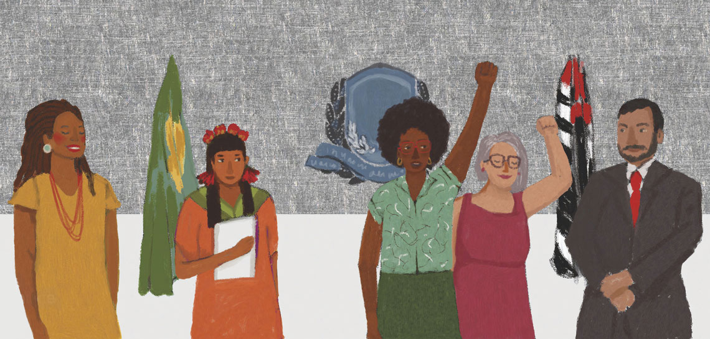

Tema 08
Inclusão de grupos socialmente marginalizados
Ampliar a participação de jovens, pessoas de baixa renda, minorias e outros grupos que enfrentam barreiras no acesso à política.

Quem fica de fora?
Jovens, pessoas de baixa renda, mulheres, população negra, indígenas, pessoas LGBTQIA+ e moradores de periferias e zonas rurais costumam ter menos espaço nas decisões políticas — embora sejam muitas vezes os mais afetados por elas.
Essa ausência não acontece por falta de interesse, mas por barreiras como falta de tempo, de transporte, de informação ou de representantes que compreendam sua realidade.
Por que a inclusão fortalece a democracia
Quando grupos diferentes participam, as políticas públicas passam a considerar realidades diversas. Isso torna as decisões mais justas e eficazes para toda a sociedade.
Caminhos para a inclusão
- Levar debates e serviços públicos até os bairros e comunidades.
- Criar conselhos e fóruns específicos para jovens e minorias.
- Incentivar candidaturas de grupos pouco representados.
- Oferecer apoio como transporte e horários flexíveis para participação.
- Valorizar lideranças comunitárias locais.